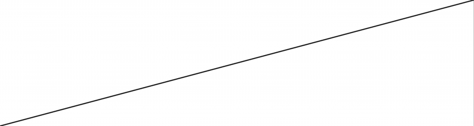
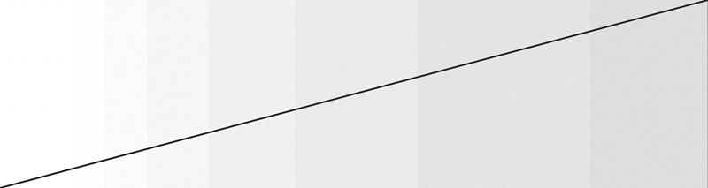
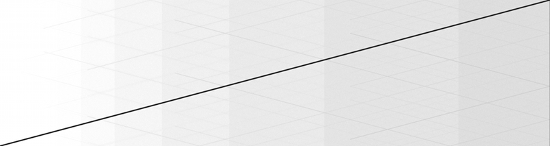

OscillatorsNot all oscillators are made equal. Here we see that the built-in trigonometric functions in the C++ standard library CMath build up harmonics and noise when the values of the input grow to high. Input Files_Sweep80s_Precise.aiff
_Sweep80s_Machine.aiff _Sweep80s_CMath.aiff _Tone80s_Recursive.aiff NotesThe recurrence relation used for the tone in Figure 4 is of the form: sin[n * f] = a[n] = 2 cos(f) a[n - 1] - a[n - 2]
a[-1] = sin(-f) a[-2] = sin(-2f) The formula is exceptionally stable over long iterations and appears to neither drift in frequency nor accumulate noise. In this case, f is the two-pi times divided by the Euler constant, 2 Pi / e. This frequency was picked since it is irrational and therefore will not exactly repeat. 80-second sweep implemented using arbitrary precision in Mathematica.

80-second sweep implemented using MachinePrecision in Mathematica.

80-second sweep implemented using the sin() function from the cmath library.
80-second tone implemented using the sine recurrence relation.
|